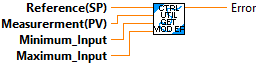

Returns modulus of error where error is the difference between the reference and a measurement.
This is used for continuous systems, for example rotational systems.
Inputs:
- Reference (SP) -- Reference input of a controller
- Measurement (PV) -- The current measurement.
- MinimumInput -- The minimum value expected from the input.
- MaximumInput -- The maximum value expected from the input.
Outputs:
- Error -- Error value of a continuous system.

|
|
Reference(SP) |
|
|
Measurerment(PV) |
|
|
Minimum_Input |
|
|
Maximum_Input |
|
|
Error |